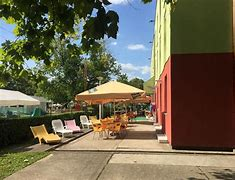

| Rengeteg emlék fűződik szinte mindenkinek, eme gyönyörű tóhoz. Mindenkinek a szívhez nőtt sok év után. A víz eszméletlenül tiszta és a parton rengeteg lehetőség van arra, hogy egy hosszú hét után pihenni tudjon egyet az ember. |  | A turistáknak is nagy látványosság a tó, hiszen mindenki szereti a vizet, és kicsiknek is nagy élmény minden pillanata. A déli partján messzebbre be lehet menni, mivel sekélyebb a víz. |